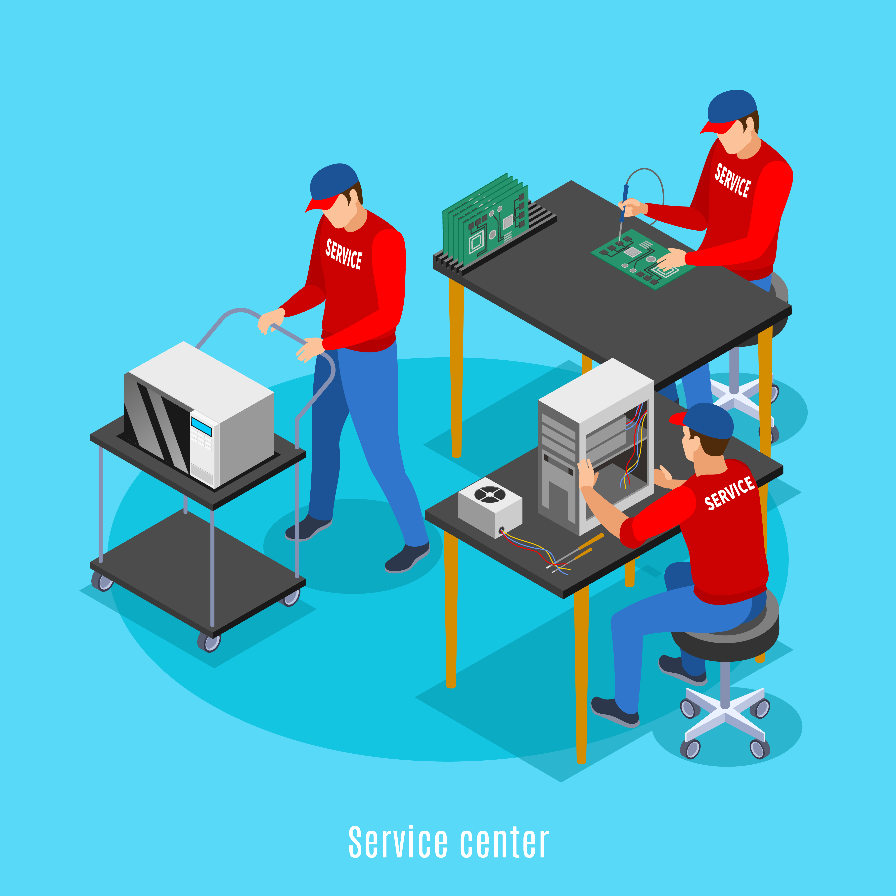

FACULDADES NA T.I
QUAL ESCOLHER?
1. CIÊNCIA DA COMPUTAÇÃO
TIPO:
Bacharel
DESCRIÇÃO:
Voltado para o lado do racíocinio, a faculdade de Ciência da Computação é para você que curte a teoria e quer se aperfeiçoar no hâmbito geral da coisa. Ou seja, se você quiser aprender de forma aprofundada sobre tecnologia e tudo que a engloba essa é a faculdade ideal, pois não é tão focada na parte prática em sí e valoriza demais os conceitos técnicos, sendo ideal também para quem quer seguir numa área de pesquisa.
MATÉRIAS:
- Matemática Discreta
- Cálculo
- Álgebra Linear
- Algoritmo e Estrutura de Dados
- Programação Orientada a Objetos
- Arquitetura de Computadores
- Inteligência Artificial
SALÁRIOS:
Em média de R$3.500 - R$12.000
2. ENGENHARIA DE SOFTWARE
TIPO:
Bacharel
DESCRIÇÃO:
Essa faculdade é voltada para o desenvolvimento, gerenciamento e aplicação dos próprios softwares, ou seja, se você é alguém que se vê colocando a mão na massa, talvez essa seja a melhor opção! Na engenharia de software, o aluno se torna apto de desenvolver os aplicativos e programas da máquina, sendo essa uma das áreas mais visadas e a mais popular do mercado.
MATÉRIAS:
- Algoritmos
- Programação Orientada a Objetos
- Sistemas Operacionais
- Tetes de Software
- Gerenciamento de Projetos
- Design Web
- Design UI/UX
SALÁRIOS:
Em média de R$5.000 - R$15.000

3. ENGENHARIA DA COMPUTAÇÃO
TIPO:
Bacharel
DESCRIÇÃO:
O objetivo desse curso é tornar profissionais aptos para integrar tanto software como hardware de forma conjunta! Com a ascenção do software o profissional dessa área tem se tornado escasso, mesmo que ainda haja uma grande necessidade de profissionais capacitados na área, por isso, se é uma área que você sente afinidade então essa é a escolha certa!
MATÉRIAS:
- Eletrônica
- Circuitos
- Arquitetura de Computadores
- Sistemas Embarcados
- Redes de Computadores
- Programação
- Desenvolvimento de Software
SALÁRIOS:
Em média de R$4.000 - R$10.000

4. SISTEMAS DA INFORMAÇÃO
TIPO:
Bacharel
DESCRIÇÃO:
Essa faculdade é interessante para quem quer seguir cargos de gerência, e não somente na parte prática, desenvolvendo código e etc. Sistemas de Informação é a carreira que se debruça sobre os processos exigidos na elaboração de tecnologia e softwares. Mas a formação não é cansativa por contar com um foco mais generalista e interdisciplinar. Assim, os profissionais entram em contato com outras áreas. Aqui, a ideia é trazer uma imersão em todas as etapas do desenvolvimento dos produtos tecnológicos, desde o seu planejamento.
MATÉRIAS:
- Desenvolvimento de Software
- Banco de Dados
- Sistemas das Redes
- Inteligência Artificial
- Análise e Projeto de Sistemas
- Administração
- Gestão de Projetos
SALÁRIOS:
Em média de R$8.000 - R$16.000
5. BANCO DE DADOS
TIPO:
Tecnólogo
DESCRIÇÃO:
Banco de Dados é uma matéria que todos os cursos têm, no entanto, na faculdade em específico o aluno aprenderá tudo de maneira aprofundada, desde a modelagem até a sua administração! É importante salientar que o aluno que escolhe essa faculdade precisa querer se envolver somente com a parte de BD, pois ela foca somente nesta área e deixa de lado toda abrangência das demais.
MATÉRIAS:
- Modelagem de Dados
- SQL
- Banco de Dados Relacionais
- Administração de Banco de Dados
- Segurança de Banco de Dados
- Data Warehouse
- Big Data
SALÁRIOS:
Em média de R$3.000 - R$8.600